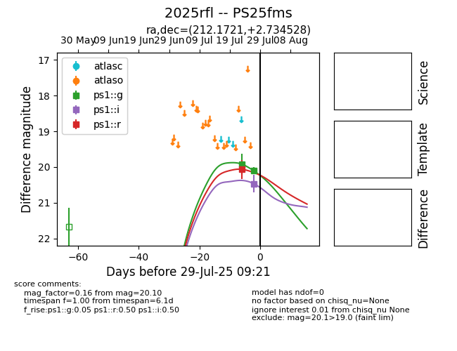

Target 2025rfl at 2025-07-29 09:21, see:
TNS: wis-tns.org/object/2025rfl
YSE: ziggy.ucolick.org/yse/transient_detail/2025rfl
alt names
2025rfl (yse,tns)
PS25fms (panstarrs)
coordinates:
equatorial (ra, dec) = (212.1721,+2.73453)
galactic (l, b) = (343.3888,+59.39581)
photometry
last ps1::g=20.10, ps1::i=20.46, ps1::r=20.06
2 ps1::g, 1 ps1::i, 1 ps1::r detections
